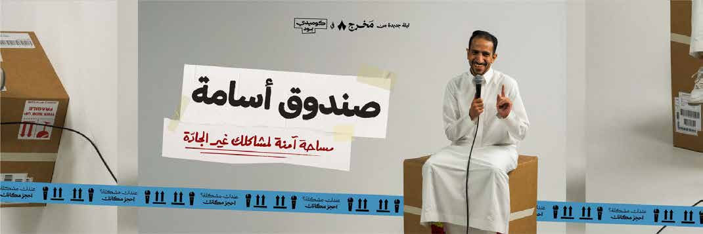

منتهية · برنامج ممتد
كايف المزرعة
كايف المزرعة وجهة تجمع بين هدوء الطبيعة وااجواء العصرية في قلب الرياض، لتجربة استرخاء مميزة وسط النخيل. كايف المزرعة ضمن ورش تنظيمية وصحية في الرياض. تبدأ الفعالية ٢٤/٠٥/٢٠٢٦، ١٢:٠٠ ص وتنتهي ٢٦/٠٦/٢٠٢٦، ١١:٥٩ م حسب البيانات المتاحة. تعرض الصفحة وقت الفعالية وموقعها ومصدرها وروابط التقويم والاتجاهات عند توفرها. المصدر: Visit Saudi Summer Calendar PDF.
المدينةالرياض
البداية٢٤/٠٥/٢٠٢٦، ١٢:٠٠ ص
النهاية٢٦/٠٦/٢٠٢٦، ١١:٥٩ م
الحالة الحيةجاري حساب الوقت...
7/8
فعالية مكتملة محفوظة. اكتملت هذه الفعالية وتبقى في EventLive كسجل طبيعي مثل أي فعالية كانت منشورة ثم انتهت.
جاهزوقت واضح
جاهزمصدر موثوق · مصدر حكومي أو رسمي
جاهزمدينة محددة
جاهزموقع قابل للوصول
بحاجة إثراءجلسة رسمية
جاهزرابط مشاركة
جاهزتصنيف مفهوم
جاهزجمهور مناسب
ما يحتاجه الزائر بسرعة
متى تبدأ كايف المزرعة؟
تبدأ كايف المزرعة في ٢٤/٠٥/٢٠٢٦، ١٢:٠٠ ص وتنتهي في ٢٦/٠٦/٢٠٢٦، ١١:٥٩ م بتوقيت السعودية.
أين تقام كايف المزرعة؟
تقام الفعالية في الرياض، الرياض.
هل المعلومات موثوقة؟
تعتمد EventLive على Visit Saudi Summer Calendar PDF أو رابط دليل ظاهر في صفحة الفعالية، مع إبقاء رابط المصدر للمراجعة.
هل يوجد جدول حي لهذه الفعالية؟
تعرض الصفحة نافذة الحضور الأساسية، ويضاف الجدول التفصيلي عند توفره من المصدر.
برنامج موثق
نافذة الحضور
هذه نافذة حضور أساسية مستنتجة من وقت بداية ونهاية الفعالية. عند توفر البرنامج التفصيلي ستظهر الجلسات والفقرات هنا.
نافذة الحضور